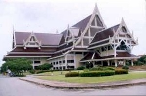
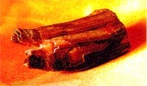
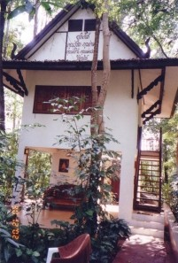
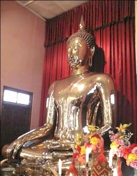
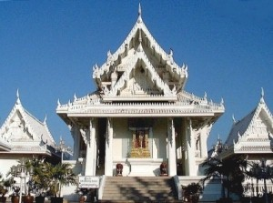
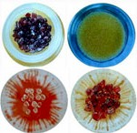
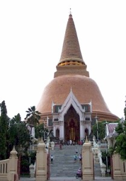

| Trang gốc |
Vietnamese, with Unicode Times font |
|
|
Tường trình một chuyến
đi |
|
|
3. Th ăm viếng các chùa ở Thái LanS ang Bangkok ngày 28 tháng 12 và ở nhà người em vợ tại thị xã Donmuang, ngay cạnh phi trường quốc tế. Chúng tôi gọi điện thoại liên lạc Khun (Ông) Somchai, một Phật tử thuần thành và là một người bạn đạo thân tình trong nhiều năm qua. Ông Somchai quen biết rất nhiều chùa và thiền viện ở Thái Lan. Các năm trước ông đã từng bố trí đưa chúng tôi đi thăm nhiều thiền viện ở miền Đông Bắc, dọc theo bờ sông Mekong. Trong những chuyến đi đó, tôi đã được chiêm bái các bảo tháp thờ xá lợi của các vị thiền sư nổi tiếng trong vùng.Hôm sau, ngày 29 tháng 12, chúng tôi cùng ông Somchai đến viếng chùa Wat Paknam Bhasicharoen. Chùa Paknam là nơi có nhiều tăng sĩ Việt Nam đến tu học trong nhiều thập niên qua, và cũng thường là nơi tạm trú của các vị Tỳ kheo VN mỗi khi có dịp sang Bangkok. Hiện nay, có 5 vị Tỳ kheo Việt đang tu học tại đó. Sau khi lễ Phật, chúng tôi đến tăng xá dành cho tu sĩ ngoại quốc để thăm Tỳ kheo Tường Phác Dhammiko. Sư Tường Phác xuất thân từ chùa Huyền Không (Huế), đã sang tu học tại chùa nầy khoảng 5 năm và nói tiếng Thái rất thành thạo. Nhân dịp Xá lợi Răng Phật được cung thỉnh từ Trung Quốc sang Thái Lan, ông Somchai đưa chúng tôi đến Trung tâm Phật giáo Buddhamonthon để chiêm bái. Đây là một trung tâm rộng lớn với nhiều hội trường có tầm cỡ quốc tế, được quốc vương Thái Lan bảo trợ thiết lập từ hơn 30 năm qua, dành cho các sinh hoạt Phật giáo. Hôm nay, hàng ngàn người đi về đây để vào chiêm bái Xá lợi. Chúng tôi xếp hàng chờ đợi gần một giờ mới vào được hội trường, nơi đặt bảo tháp Xá lợi. Vì vấn đề an ninh, chúng tôi không được phép mang vào máy ảnh, máy quay phim, và chỉ được đứng từ xa, khoảng 10 mét, để chiêm bái, nên không được nhìn thấy Xá lợi rõ ràng. Chỉ nhìn được bảo tháp, và các poster phóng chiếu ảnh Xá lợi trên tường. Tối hôm đó, vợ chồng chúng tôi đón xe lửa để đi đến tỉnh Phrae, cách Bangkok khoảng 500 km về phía Bắc. Đây là những ngày cuối năm nên rất đông người Thái trở về quê. Các toa xe đều đầy hành khách. Xe lửa đến nhà ga Denchai thuộc tỉnh Phrae khoảng 5 giờ sáng, và chúng tôi được anh Buongchok đến đón, đưa về thiền viện Wat Phrae Dhammaram. Vị trụ trì là ngài thiền sư Ajahn Gunghah. Ajahn Gunghah và anh Buongchok đã từng đến thăm thành phố Perth vào 12 năm trước. Riêng ngài Gunghah có ở lại hoằng pháp tại Perth trong 6 tháng. Chúng tôi để đồ đạc trong một phòng nhỏ tại khách xá, rồi cùng anh Buongchok trở ra chợ Denchai để ăn điểm tâm, và mua một ít vật dụng cúng dường chư Tăng Ni. Đến khoảng 7 giờ sáng, chúng tôi bước ra đường chánh ngang chợ, đứng xếp hàng với các Phật tử Thái ở địa phương, chờ để bát chư Tăng. Một đoàn Tỳ kheo khoảng 20 vị, đi đầu là ngài Tỳ kheo Gunghah, đi bộ, chân đất, chậm rãi đi khất thực trì bình, từ thiền viện cách đó khoảng 5 km. Theo sau là một số cư sĩ hộ tăng, giúp mang về các vật thực cúng dường. Ngài Gunghah nhận ra chúng tôi, mĩm cười thăm hỏi, sờ đầu tôi, và chúc phúc với một đoạn kinh bằng tiếng Pàli. Chúng tôi trở về thiền viện, phụ giúp bày dọn thức ăn, và dâng lên chư Tăng Ni. Ở đây mọi người chỉ ăn mỗi ngày một bửa duy nhất, từ 9 đến 10 giờ sáng, với thức ăn toàn là rau đậu. Sau đó, chúng tôi dạo quanh, tham quan, và đến tịnh thất của ngài thiền sư trụ trì. Chúng tôi ở đó suốt buổi trưa, hầu chuyện với ngài, và quan sát các Phật tử Thái từ nhiều nơi xa đến gặp ngài để cúng dường và tham vấn ngài về nhiều vấn đề khác. Chúng tôi được anh Buongchok đưa đi viếng hai chùa nhỏ trong vùng - Wat Mae Choei (Uttaradit) và Wat Mae Chuawa (Phrae), là chi nhánh của thiền viện. Những nơi nầy rất yên tĩnh, vắng lặng, không khí trong lành, rất thích hợp cho việc tu thiền. Tối hôm đó, chúng tôi đón xe lửa trở về Bangkok, thân thể mệt mõi, nhưng tâm hồn rất hoan hỷ, nhẹ nhàng. Sáng ngày đầu năm dương lịch 2003, chúng tôi đi lễ Phật tại chùa Wat Dongmuang gần nhà. Đây là một ngôi chùa lớn, có hơn 40 vị Tỳ kheo. Mỗi sáng khoảng 6 giờ, các sư đi ra ngoài khất thực trì bình trong các ngõ phố chung quanh chùa. Nhiều Phật tử trẻ trong vùng đến chùa để xin xuất gia tu gieo duyên ngắn hạn - vài tuần lễ cho đến vài tháng, nhất là trong mùa an cư, theo phong tục của người dân xứ Thái. Ngày 3 tháng 1, 2003, tôi đưa gia đình đi tham quan thành phố Bangkok. Chúng tôi dùng nhiều phương tiện chuyên chở công cộng khác nhau: xe lửa, xe buýt, taxi, xe lửa tốc hành (sky train), xe tuk-tuk (một loại xe 3 bánh có động cơ) v.v., để làm quen với sinh hoạt địa phương và quan sát phố xá. Chúng tôi đến khu phố Tàu, Yaowarad, và đi viếng chùa Wat Traimit là nơi có thờ một tượng Phật nổi tiếng. Tượng Phật lát vàng, cao khoảng 3 mét, do người ta tình cờ tìm được khoảng 50 năm trước, khi đào đất để làm đường phố. Sáng ngày 4 tháng 1, một gia chủ trong khu phố nơi chúng tôi đang ở có tổ chức lễ để bát hội trai tăng trong dịp đầu năm. Tất cả mọi gia đình trong xóm đều được mời đến tham gia cúng dường. Chín vị Tỳ kheo của chùa Wat Donmuang được cung thỉnh đến hành lễ, truyền Tam Quy Ngũ Giới, tụng kinh cầu an, chúc phúc cho mọi người. Trưa hôm đó, chúng tôi đến chùa Wat Samphraya, cạnh bờ sông Chao Phraya, trong vùng Samsen-Banglampu của thành phố Bangkok. Samsen là nơi có nhiều người Việt đến định cư khoảng 200 năm trước, và hiện cũng còn vài di tích lịch sử. Chùa Wat Samphraya là một trong những chùa nổi tiếng, đào tạo tăng tài cho Phật giáo Thái Lan. Tại chùa, chúng tôi đến thăm ngài Tỳ kheo Tịnh Giác Visuddhasaro. Ngài thọ đại giới ở chùa Giác Quang (Quận 6, TP HCM), sang Thái Lan tu học hơn 40 năm, và hiện nay là một vị giảng sư tại đó. Sáng sớm ngày 6 tháng 1, chúng tôi đi tham quan khu du lịch Chợ Nổi - Floating Market, trong tỉnh Rajburi. Trên đường về, tình cờ đi ngang qua chùa Wat Luang Phor Soth Dhammakayaram. Tôi đề nghị ông Somchai ghé vào thăm viếng, vì tôi đã từng thấy ảnh của chùa nầy trên mạng Internet. Chúng tôi vào lễ Phật tại chánh điện và được một vị Tỳ kheo đưa đi chiêm bái các loại Xá lợi. Tại đó, chúng tôi được dịp quan sát rõ ràng các loại Xá lợi của Phật, các vị đại đệ tử, và các vị thiền sư nổi tiếng. Mỗi loại xá lợi có những hình dạng và màu sắc rất kỳ đặc. Buổi trưa hôm đó, chúng tôi đến tỉnh Nakhon Phathom, viếng thăm chùa Wat Pathom Chedi. Theo truyền thuyết, đây là nơi đạo Phật được truyền bá đầu tiên tại xứ Thái, do một đoàn truyền giáo của vua A Dục đến từ Ấn Độ khoảng hai ngàn năm trước. Qua nhiều thời kỳ tu bổ và phát triển, chùa ngày nay có một bảo tháp vĩ đại, lát toàn gạch men, cao 120 mét, với đường kính tại chân tháp là 56 mét. Tôi đến lễ lạy Phật, và im lặng đi nhiễu vòng quanh tháp 3 lần, quán tưởng đến ân đức Tam Bảo Phật-Pháp-Tăng. Có lẽ tôi có phước duyên với chùa nầy, vì đây là ngôi chùa đầu tiên tôi đến thăm viếng khi sang Thái Lan 30 năm trước. Từ đó cho đến nay, tôi đã được bạn bè đưa đến đây nhiều lần, mỗi khi có dịp sang thăm xứ sở nầy. N gày 8 tháng 1-2003, chúng tôi đáp máy bay trở về Tây Úc, kết thúc chuyến đi 5 tuần lễ, trong đó có 3 tuần lễ ở Việt Nam và 2 tuần lễ ở Thái Lan. Một chuyến đi rất mệt nhọc, nhưng mang nhiều kỷ niệm thiện lành và lợi lạc tinh thần cho gia đình chúng tôi. Xin chân thành cám tạ và tán thán thiện tâm của quý chư Tăng Ni và thân hữu Phật tử đã hết lòng hỗ trợ chúng tôi trong chuyến đi đầy ý nghĩa nầy.Sadhu, sadhu, sadhu! Bình Anson -ooOoo- Trang trước | Ðầu trang | Trang kế [Trở
về trang Thư Mục] |